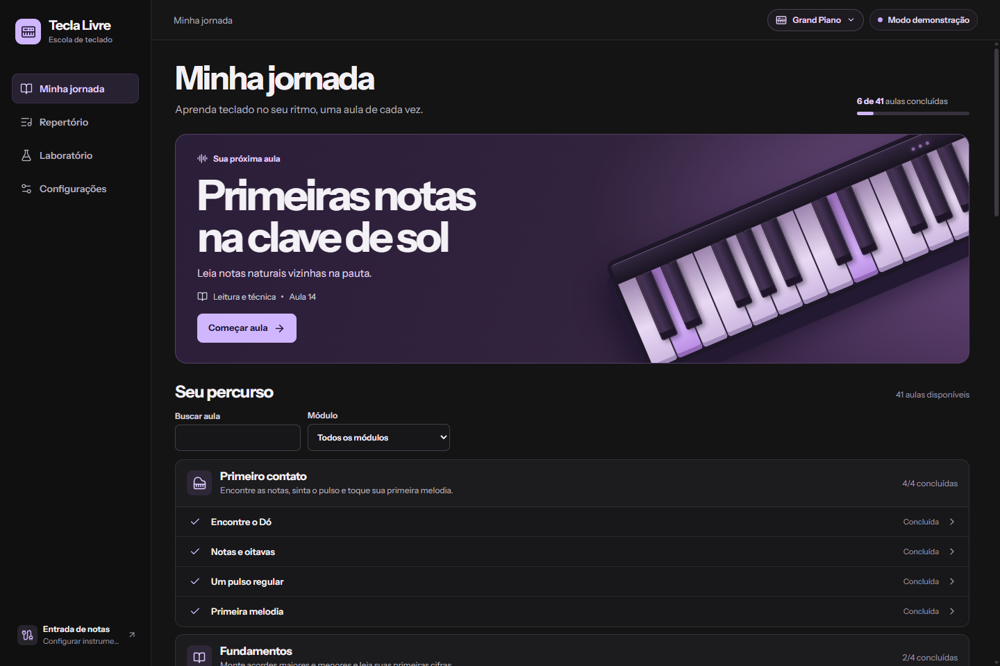
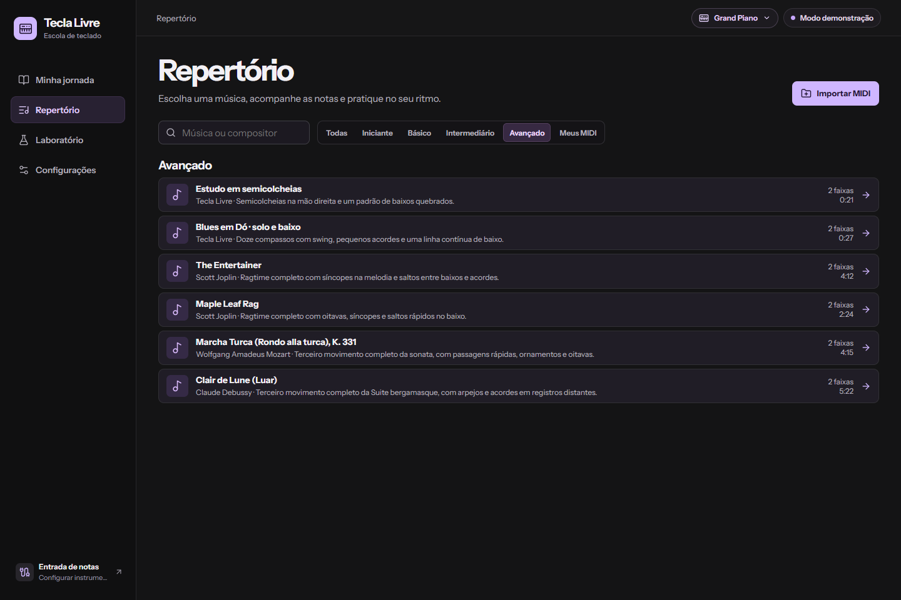
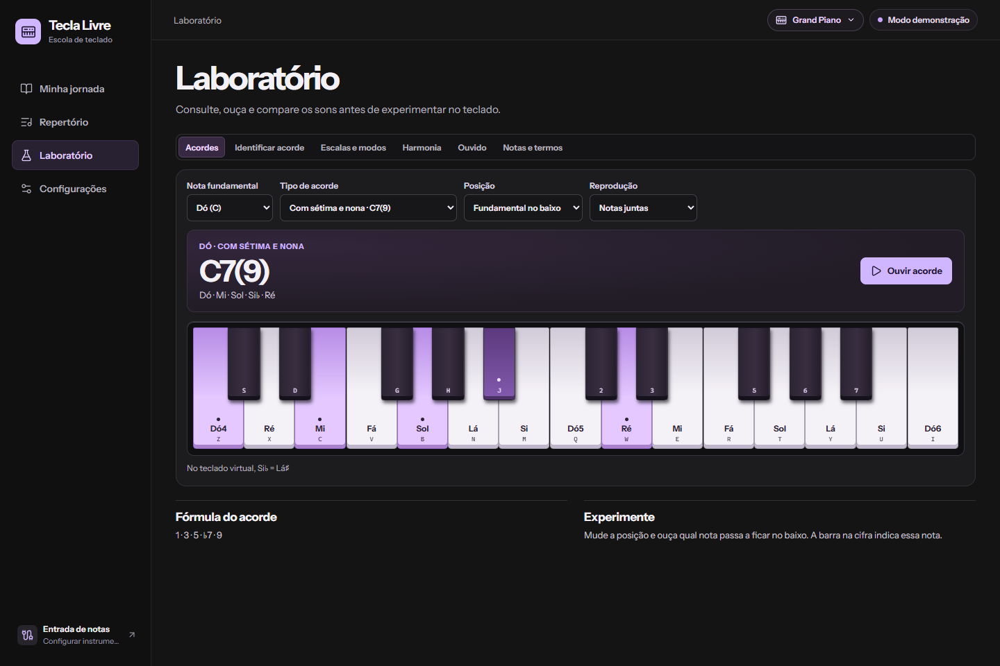

41 aulas em português e inglês
Estude ritmo, leitura, acordes e acompanhamento. Troque o idioma pela barra lateral a qualquer momento.
Estude com aulas em português ou inglês e pratique músicas com notas na tela. Use um controlador MIDI ou o teclado do computador.
Baixar grátis para Windows

Estude ritmo, leitura, acordes e acompanhamento. Troque o idioma pela barra lateral a qualquer momento.

Escolha a mão direita, a esquerda ou as duas nas músicas com faixas separadas. Repita trechos ou importe seus próprios MIDIs.

Consulte acordes e escalas, ouça progressões e escolha o timbre do teclado.
O app salva o progresso no computador.